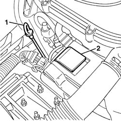
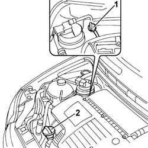
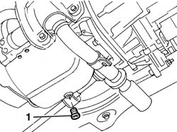
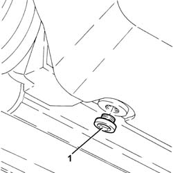
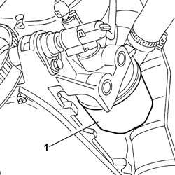
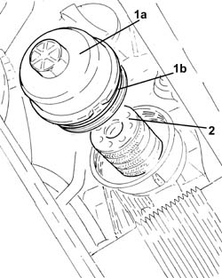

0010T12 engine oil and filter replace
- Path
- Procedures > 00 MAINTENANCE > 0010 NEW UNITS AND PLANNED MAINTENANCE > 0010T VEHICLE OIL AND FLUIDS > 0010T12 engine oil and filter replace
- Kind
- repair procedure (removal / refitting; the operation number is the code)
- Applies to
- all engines; all production periods
- Interactive page
- https://sloeber94.github.io/elrnDB-fPnd/en/#/2752377
Applies to: engines: 1.1, 1.2 8v; all production periods
Position the vehicle on the ramp.
1. Withdraw the oil level dipstick.
2. Remove the filler plug.

Applies to: engines: 1.3 JTD 16v; all production periods
Remove the car from the ramps.
1. Withdraw the oil level dipstick.
2. Remove the filler plug.

Applies to: engines: 1.1, 1.2 8v; all production periods
Raise the car.
Place a suitable container under the car, level with the drain plug.
1. Undo the drain plug on the engine sump and drain the oil completely into the container.

Applies to: engines: 1.3 JTD 16v; all production periods
Raise the car.
Place a suitable container under the car, level with the drain plug.
1. Undo the drain plug on the engine sump and drain the oil completely into the container.

Applies to: engines: 1.1, 1.2 8v; all production periods
1. Disengage the oil filter and remove it.

Applies to: engines: 1.3 JTD 16v; all production periods
1. Unscrew and remove the cartridge oil filter cover (1a) complete with O-ring (1b).
2. Withdraw and remove the cartridge oil filter.

Applies to: engines: 1.1, 1.2 8v; all production periods
Clean the drain plug and tighten it to the specified torque.
Lubricate the new oil filter gasket with engine oil and tighten it fully by hand.
Lower the vehicle.
Refill the lubrication circuit (engine and filter) using the recommended oil.
 | Type | Component | Name | Qty. |
|---|---|---|---|---|
- | Oli [l] | ENGINE LUBRICATION CIRCUIT | SELENIA 20K | 2.5 |
For the optimum operation of the engine in particularly harsh climatic conditions (temperatures below -20 degrees C), use the recommended oil for the engine lubrication circuit.
| Type | Component | Name | Qty. |
|---|---|---|---|---|
- | Oli [l] | ENGINE LUBRICATION CIRCUIT | SELENIA PERFORMER | 2.5 |
There are 2.2 litres of oil in the engine alone.
Check that the oil level is correct using the dipstick.
Fit the filler plug.
Start up the enigne and let it idle for about two minutes; Switch off the engine and wait for a few minutes.
Check that the oil level is correct again.
Remove the car from the ramps.
Applies to: engines: 1.3 JTD 16v; all production periods
Clean the drain plug and tighten it to the specified torque.
Refit the cartridge oil filter in its seating.
Refit in its seating the cartridge oil filter cover complete with O-ring and tighten.
Lower the vehicle.
Refill the lubrication circuit (engine and filter) using the recommended oil.
| Type | Component | Name | Qty. |
|---|---|---|---|---|
- | Oli [l] | ENGINE LUBRICATION CIRCUIT | SELENIA WR | 3.0 |
There are 3.7 litres of oil in the engine alone.
Check that the oil level is correct using the dipstick.
Fit the filler plug.
Start up the enigne and let it idle for about two minutes; Switch off the engine and wait for a few minutes.
Check that the oil level is correct again.
Remove the car from the ramps.
Topics that link to this page (8)
- 0010T10 change engine oil
- 1020A20 CRANK CASE OIL SUMP - R + R CLEAN SEALS FOR SEALANT APPLICATION
- 1020D14 FRONT CRANK SHAFT OIL SEAL COVER - R + R AND REPLACE SEALS FOR VERSIONS WITH OIL PUMP ON CRANK SHAFT, TIMING SIDE
- 1020D16 FRONT CRANKSHAFT OIL SEAL COVER - R+R AND REPLACE GASKETS FOR VERSIONS WITH AIRCONDITIONER
- 1020D30 oil seal cover, fly wheel side - r + r and replace seals
- 1028H20 piston with connecting rod - r r
- 1028H21 piston with connecting rod - r r
- 1084B26 emgine oil intake duct - r r